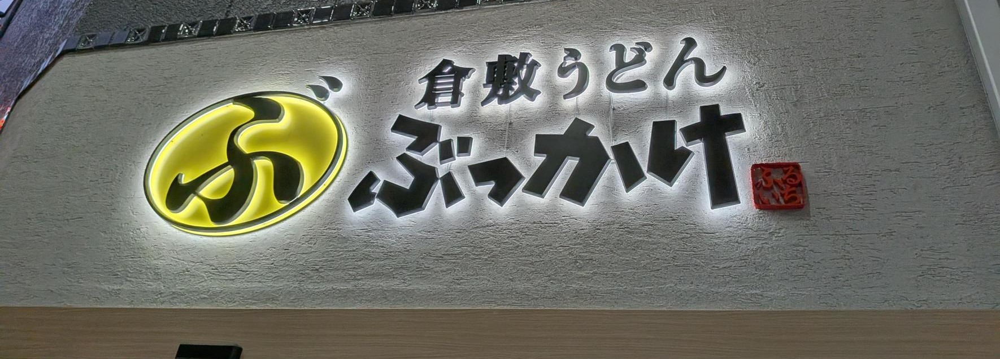

麺のこだわり
細すぎず太すぎず、コシのある麺。
讃岐ほどコシが強すぎるわけではなく、
心地よい噛み応え。
他では食べたことのない食感。


住所 〒710-0046 岡山県倉敷市中央２丁目１−１６
営業時間 11:00 ～ 19:00
住所 〒710-8560 岡山県倉敷市水江１
イオンモール倉敷 ショッピングセンタ 2F
営業時間 10:00 ～ 21:00
住所 〒700-0907 岡山県岡山市北区下石井１丁目２−１
営業時間 10:00 ～ 21:00
住所 〒710-0055 岡山県倉敷市阿知２丁目３−２３
営業時間 09:00 ～ 21:00
住所 〒701-0114 岡山県倉敷市松島１１５２−１７
営業時間 10:00 ～ 21:00
住所 〒711-8567 岡山県倉敷市児島元浜町６−３
ボートレース児島 1F フードコート内
営業時間 11:00 ～ 16:00
細すぎず太すぎず、コシのある麺。
讃岐ほどコシが強すぎるわけではなく、
心地よい噛み応え。
他では食べたことのない食感。

あまじょっぱぱい、だしの効いた
うまみが溢れるたれ。
麺とよく絡み、
すすりが止まらなくなる。
濃いめなのに最後まで飲み干したくなる一杯。
安い！海老天などの盛り合わせで500円。
衣も軽い口当たりでサクサク。
エビや野菜も大きく美味しい。


あまじょっぱいタレと程よいコシの麺がマッチした一杯

とろろがタレの旨味を引き立てて、スルスル食べられる

梅とおろしでさっぱりとした味わい

温玉のまろやかさがタレとの相性Good

お揚げと椎茸の旨味が加わった一杯